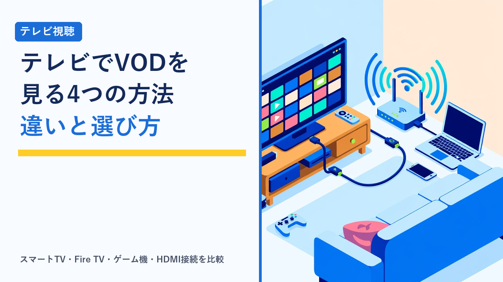

テレビでVODを見る方法まとめ：スマートTV・Fire TV・ゲーム機・HDMI接続の違いと選び方
2026-09-21 更新

動画配信サービス（VOD）はスマートフォンやパソコンでも見られますが、映画やドラマをじっくり楽しむなら、やはりテレビの大画面で見たいという人は多いはずです。テレビでVODを見る方法は1つではなく、テレビ自体にアプリが入っている「スマートTV」、HDMI端子に差す「ストリーミングデバイス」、家にある「ゲーム機」、パソコンやスマホをつなぐ「HDMI接続・キャスト」など、家の環境や持っている機器によって選択肢が変わります。この記事では、それぞれの方式の仕組みと得意・不得意、対応状況を確認するときのポイント、自分の家に合う選び方を客観的に整理します。特定の製品を推奨するものではなく、各方式に共通する考え方を扱います。
テレビでVODを見る4つの方法
まず全体像です。どの方法でも「テレビをインターネットにつなぎ、VODのアプリや映像を表示する」という点は同じで、違うのはアプリを動かす機器がどこにあるかです。
① スマートTV（内蔵アプリ）
テレビ本体にVODアプリが入っている方式。追加の機器が不要で、リモコンの専用ボタンから直接アプリを開けることが多い。
② ストリーミングデバイス
Fire TV StickやChromecast、Apple TVなど、テレビのHDMI端子に差して使う小型機器。古いテレビでもVODアプリを追加できる。
③ ゲーム機
PlayStationやNintendo Switch、Xboxなどにアプリを入れて再生する方式。すでに持っていれば追加費用なしで始められる。
④ HDMI接続・キャスト
パソコンやスマホの画面をケーブルや無線でテレビに映す方式。アプリの対応状況に左右されにくいが、操作は手元の機器で行う。
結論から言うと、新しめのテレビを持っているなら①、テレビが古い・アプリが非対応なら②、ゲーム機が家にあるなら③を試してから②、どれも当てはまらない場合の補助手段として④という順番で検討するのが一般的です。以下、それぞれの特徴を見ていきます。
方式ごとの特徴を比較
| 比較項目 | スマートTV | ストリーミングデバイス | ゲーム機 | HDMI接続・キャスト |
|---|---|---|---|---|
| 追加の機器 | 不要 | 本体を購入（数千円〜） | 持っていれば不要 | ケーブルや変換アダプタ、または対応機器 |
| 対応アプリの数 | メーカー・年式で差が大きい | 主要サービスはほぼ対応 | 機種によって対応が限られる | 元の機器で見られるものは基本的に映せる |
| 操作性 | リモコン一体で手軽 | 専用リモコンで手軽 | コントローラー操作でやや煩雑 | 手元の機器で操作、テレビは表示のみ |
| 画質・音質 | テレビの性能次第で4K・HDR対応も | 機種のグレードで4K対応の有無が分かれる | 機種と対応アプリによる | 機器の出力とケーブル規格、著作権保護の制約を受ける |
| 起動の速さ・安定性 | テレビの処理性能に依存、古い機種は遅いことも | 比較的安定、機種更新もしやすい | ゲーム機の起動を待つ必要がある | 無線キャストは途切れやすいことがある |
| 向いている人 | テレビが新しく、見たいサービスに対応している | 古いテレビを使い続けたい、サービスを幅広く使いたい | すでにゲーム機があり、まず試したい | 特定サービスだけ一時的に映したい、PCの画面を共有したい |
上の表は各方式の一般的な傾向を整理したものです。対応アプリ・画質・機能はテレビや機器のメーカー・年式・グレードによって異なり、VODサービス側の対応状況も変わることがあります。購入や契約の前に各公式サイトの対応機器一覧でご確認ください。
① スマートTV：手軽だが「対応アプリ」と「年式」の確認が必要
近年販売されているテレビの多くは、Android TV（Google TV）やメーカー独自のOSを搭載し、VODアプリを本体で動かせます。リモコンに動画配信サービスのボタンが付いている機種も多く、電源を入れてボタンを押すだけで再生画面まで行ける手軽さが最大の利点です。
一方で注意したいのは、「スマートTVなら何でも見られる」わけではない点です。搭載OSによって提供されているアプリが異なり、年式が古い機種ではアプリの提供が終了していたり、新しいサービスが追加されなかったりすることがあります。また、テレビ本体の処理性能が低いと、アプリの起動や作品一覧の表示に時間がかかる場合もあります。すでにテレビを持っている場合は、購入前ではなく「今のテレビで見たいサービスのアプリが動くか」を、テレビのアプリ一覧とVOD側の対応機器ページで確認するところから始めるのが確実です。
② ストリーミングデバイス：古いテレビでも最新のアプリ環境にできる
Fire TV StickやChromecast with Google TV、Apple TVなどのストリーミングデバイスは、テレビのHDMI端子に差し、電源とWi-FiをつなぐだけでテレビをスマートTV相当にできる機器です。HDMI端子さえあれば、アプリ非対応の古いテレビでも使えるため、テレビの買い替えより安く済む手段として広く使われています。
選ぶときの主な分かれ目は「4K・HDRに対応しているグレードか」「操作のレスポンス」「音声操作やリモコンの使い勝手」です。フルHDのテレビなら4K対応モデルを選ぶ必要はなく、逆に4Kテレビで高画質作品を見たい人は上位グレードを検討する形になります。VODの画質やダウンロード機能の考え方はVODサービスの画質・ダウンロード機能を比較、オフライン視聴に強いのはどれで整理しています。またデバイスは数年で世代が変わるため、テレビを買い替えるよりも低コストで環境を更新しやすい点も特徴です。
③ ゲーム機：持っているなら追加費用なしで試せる
PlayStationやXbox、Nintendo Switchなどのゲーム機には、VODアプリを追加できるものがあります。すでに家にあれば新しく機器を買わずに始められるのが利点で、「まずテレビでVODを見る体験をしてみたい」という段階では有力な選択肢です。
ただし、対応しているサービスが機種ごとに限られる点と、視聴のたびにゲーム機を起動してコントローラーで操作する手間がある点は把握しておく必要があります。据え置き機は消費電力もストリーミングデバイスより大きい傾向があり、毎日長時間見るなら専用機器のほうが快適という声も多く見られます。日常的に使う前提なら「まずゲーム機で試し、使い続けるなら②へ移る」という流れが現実的です。
④ HDMI接続・キャスト：補助手段として知っておく
パソコンをHDMIケーブルでテレビにつなぐ、スマホの画面をミラーリングする、対応アプリから「キャスト」でテレビに送るといった方法もあります。VODアプリがテレビ側に無くても、パソコンやスマホで見られるものはテレビに映せるため、対応状況に左右されにくいのが特徴です。
一方で、著作権保護（HDCP）に対応していないケーブルや変換アダプタでは映像が表示されないことがあり、スマホの画面ミラーリングは多くのVODアプリで制限されています。またミラーリングでは画質が元の機器の出力に依存し、無線では途切れや遅延が起きやすい点も踏まえると、常用の方法としてより、出張先のテレビや一時的な用途での補助手段と考えるのが妥当です。なお、対応アプリからのキャスト機能（Chromecast対応など）はミラーリングとは仕組みが異なり、テレビ側またはデバイス側でアプリが直接再生するため、こちらは画質・安定性ともに実用的です。
対応状況を確認するときのポイント
方式を決めたら、契約前・購入前に次の点を確認しておくと失敗しにくくなります。
- VOD側の「対応機器一覧」を見る：各サービスの公式サイトには対応テレビ・デバイス・ゲーム機の一覧があります。テレビのメーカー名・年式・OSで確認できるのが一般的です。
- 4K・HDRで見たいなら機器とプランの両方を確認：高画質で見るにはテレビ・再生機器・VODの契約プラン・回線速度のすべてが条件を満たす必要があります。上位プランでないと4K配信されないサービスもあります。
- 同時視聴台数とデバイス登録数：テレビとスマホで同時に見る家庭は、プランごとの同時視聴台数を確認します。詳しくは動画配信サービスの家族アカウント・同時視聴ルールまとめにまとめています。
- 回線とWi-Fiの安定性：テレビの設置場所がルーターから離れていると、無線が不安定になることがあります。有線LAN対応のデバイスやテレビを選ぶ、中継機を使うなどの対策も選択肢です。
- ログイン方法：テレビでのログインは、画面に表示されるコードをスマホで入力する方式が多く、初回だけ少し手間がかかります。無料体験を試すなら、体験期間内にテレビでの再生まで確認しておくと安心です。
無料体験の有無や期間はサービスごとに異なります。テレビで見る環境を整えてから体験を始めたい人は、動画配信サービスの無料体験まとめ比較で各社の条件を確認しておくと進めやすくなります。
選び方のポイント
- まず今あるもので試す：スマートTVやゲーム機がすでにあるなら、機器を買う前にアプリの有無と動作を確認するのが最も無駄がありません。
- テレビが古い・動作が遅いならストリーミングデバイス：数千円台から始められ、テレビの買い替えより負担が小さく、アプリ環境も新しく保ちやすい方式です。
- 見たいサービスから逆算する：特定のサービスをメインに使うなら、そのサービスの対応機器一覧に載っている方式を選ぶのが確実です。複数のサービスを使い分けるなら、対応範囲の広いストリーミングデバイスが向いています。
- 画質にこだわるなら機器・プラン・回線の3点をそろえる：どれか1つでも条件を満たさないと高画質にはなりません。フルHDのテレビなら、4K対応の上位モデルは必ずしも必要ではありません。
- 家族で使うなら操作の簡単さを重視：リモコンにサービスのボタンがある方式や、音声操作に対応した機器は、機械が苦手な家族でも使いやすい傾向があります。
よくある質問
スマートTVではないテレビでも、VODは見られますか？
HDMI端子があれば、Fire TV StickやChromecastなどのストリーミングデバイスを差すことで、多くのVODアプリをテレビで使えるようになります。テレビ自体がインターネットに対応している必要はなく、デバイス側がWi-Fiにつながれば再生できます。HDMI端子がない古いテレビの場合は、変換機器を使う方法もありますが、著作権保護の関係で映らないケースがあるため、テレビの買い替えやデバイス対応のテレビの検討も含めて判断するのが現実的です。
スマホの画面をテレビに映せば、どのVODでも見られますか？
多くのVODアプリは、著作権保護のためにスマホ画面のミラーリングを制限しており、映像部分が黒く表示されたり再生が止まったりすることがあります。テレビで見たい場合は、ミラーリングではなく、テレビやストリーミングデバイスにVODアプリを入れて再生するか、アプリのキャスト機能（対応している場合）を使うのが確実です。パソコンからのHDMI接続は比較的映りやすいものの、ケーブルやアダプタが著作権保護に対応している必要があります。
4K対応のテレビなら、VODも自動的に4Kで見られますか？
自動的に4Kになるわけではありません。4Kで再生するには、テレビだけでなく再生機器（内蔵アプリまたはデバイス）が4K対応であること、VODの契約プランが4K配信を含むこと、作品自体が4Kで提供されていること、回線速度が十分であることのすべてが必要です。サービスによっては上位プランでのみ4Kが視聴でき、標準プランではフルHDまでという設計もあります。契約前に各サービスの画質ごとのプラン条件と対応機器を確認してください。